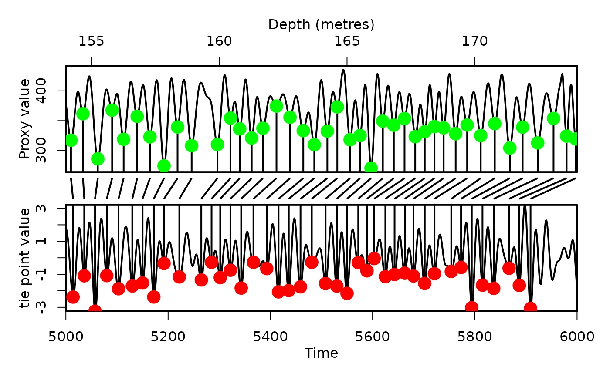

Plot proxy record anchored to an astronomical solution
Source:R/plot_astro_anchor.R
plot_astro_anchor.RdPlot the results of the anchoring the extracted signal to an astronomical solution using
which was conducted using the astro_anchor
Usage
plot_astro_anchor(
astro_solution = NULL,
proxy_signal = NULL,
anchor_points = NULL,
time_dir = TRUE,
keep_editable = FALSE
)Arguments
- astro_solution
Astronomical solution to which the proxy record was anchored, drawn in the bottom panel: a two-column matrix or data frame with age/time in column 1 and the insolation/angle/ETP value in column 2 (the same solution as used in
astro_anchor). Required (Default=NULLgives an error).- proxy_signal
Proxy record that was anchored, drawn in the top panel: a two-column matrix or data frame with depth/time in column 1 (metres) and the proxy value in column 2 (the same record as used in
astro_anchor). Required (Default=NULLgives an error).- anchor_points
Tie points to draw: the four-column matrix returned by
astro_anchor(depth of the proxy tie point, age of the astronomical tie point, proxy value, astronomical solution value). The proxy tie points are drawn as green dots, the astronomical ones as red dots, and lines connect each pair. Required (Default=NULLgives an error).- time_dir
Direction of time in the proxy record that was assumed during anchoring (logical).
TRUE: time increases with increasing depth (e.g. a borehole that gets older downwards), so the depth axis runs left to right;FALSE: time decreases with increasing depth/height (e.g. an outcrop log with 0 m at the base), so the depth axis is reversed to line up with the age axis.Default=TRUE.- keep_editable
Keep the plot layout and graphical parameters (
par) after plotting, so that extra elements can be added (logical). WithFALSEthe previousparsettings are restored on exit.Default=FALSE.
Value
The output is a set of 2 plots connected by lines The top plot is the proxy record with anchor points on top of it The bottom plot is the astronomical solution The lines connect the anchor points
Examples
# \donttest{
# Use the grey_track example tracking points to anchor the grey scale data set
# of Zeeden et al., (2013) to the p-0.5t la2004 solution
grey_wt <-
analyse_wavelet(
data = grey,
dj = 1/200,
lowerPeriod = 0.02,
upperPeriod = 256,
verbose = FALSE,
omega_nr = 8
)
#Use the pretracked grey_track curve which traced the precession cycle
grey_track <- completed_series(
wavelet = grey_wt,
tracked_curve = grey_track,
period_up = 1.25,
period_down = 0.75,
extrapolate = TRUE,
genplot = FALSE
)
# Extract precession, obliquity and eccentricity to create a synthetic insolation curve
grey_prec <- extract_signal(
tracked_cycle_curve = grey_track[,c(1,2)],
wavelet = grey_wt,
period_up = 1.2,
period_down = 0.8,
add_mean = FALSE,
tracked_cycle_period = 22,
extract_cycle = 22,
tune = FALSE,
plot_residual = FALSE
)
grey_obl <- extract_signal(
tracked_cycle_curve = grey_track[,c(1,2)],
wavelet = grey_wt,
period_up = 1.2,
period_down = 0.8,
add_mean = FALSE,
tracked_cycle_period = 22,
extract_cycle = 110,
tune = FALSE,
plot_residual = FALSE
)
grey_ecc <- extract_signal(
tracked_cycle_curve = grey_track[,c(1,2)],
wavelet = grey_wt,
period_up = 1.25,
period_down = 0.75,
add_mean = FALSE,
tracked_cycle_period = 22,
extract_cycle = 40.8,
tune = FALSE,
plot_residual = FALSE
)
insolation_extract <- cbind(grey_ecc[,1],grey_prec[,2]+grey_obl[,2]+grey_ecc[,2]+mean(grey[,2]))
insolation_extract <- as.data.frame(insolation_extract)
insolation_extract_mins <- min_detect(insolation_extract,pts=3)
#use the astrosignal_example to tune to which is an \cr
# ETP solution (p-0.5t la2004 solution).
astrosignal_example <- na.omit(astrosignal_example)
astrosignal_example[,2] <- -1*astrosignal_example[,2]
astrosignal <- as.data.frame(astrosignal_example)
#anchor the synthetic insolation curve extracted from the
# grey scale record to the insolation curve.
#use the anchor_points_grey data set to plot the
#result of using the astro_anchor function
#anchor_points_grey <- astro_anchor(
#astro_solution = astrosignal,
#proxy_signal = insolation_extract,
#proxy_min_or_max = "min",
#clip_astrosolution = FALSE,
#astrosolution_min_or_max = "min",
#clip_high = NULL,
#clip_low = NULL,
#extract_astrosolution = FALSE,
#astro_period_up = NULL,
#astro_period_down = NULL,
#astro_period_cycle = NULL,
#extract_proxy_signal = FALSE,
#proxy_period_up = NULL,
#proxy_period_down = NULL,
#proxy_period_cycle = NULL,
#pts=3,
#verbose=FALSE,
#genplot=FALSE # set verbose to TRUE to allow for anchoring using text feedback commands
#)
plot_astro_anchor(astro_solution = astrosignal,
proxy_signal = insolation_extract,
anchor_points = anchor_points_grey,
time_dir = TRUE, # the anchor points of this example get older with increasing depth
keep_editable = FALSE)

# }